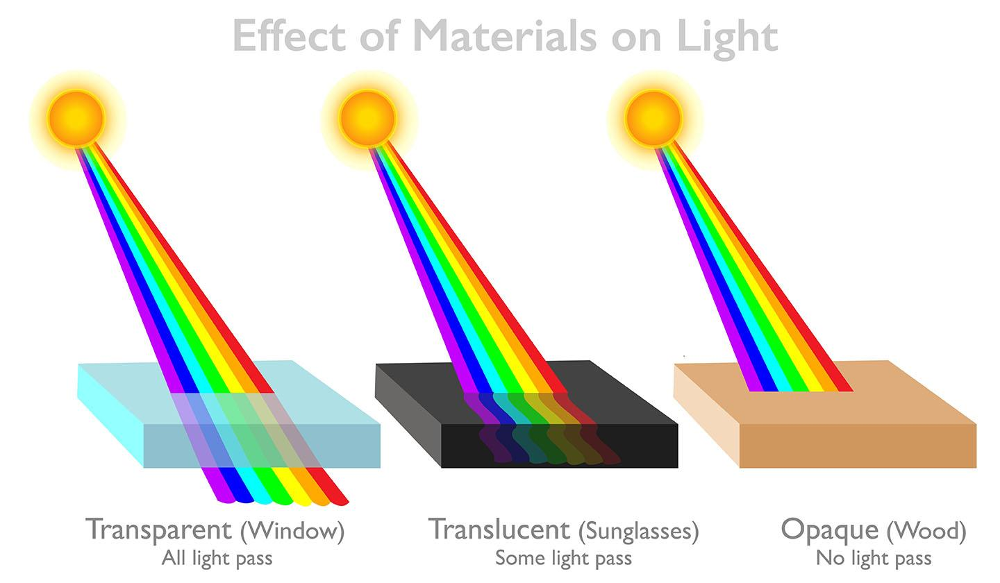
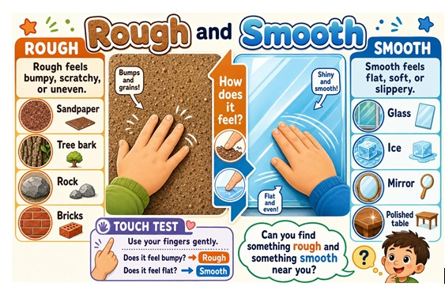
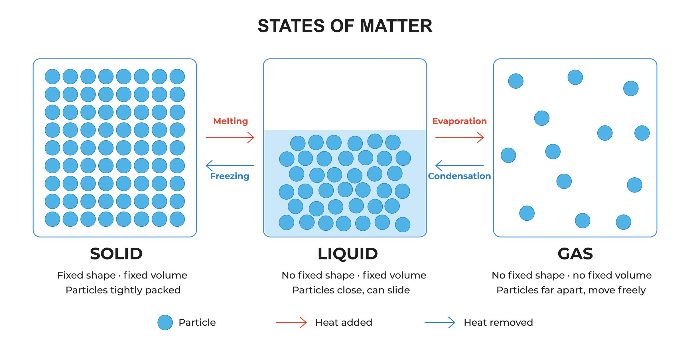
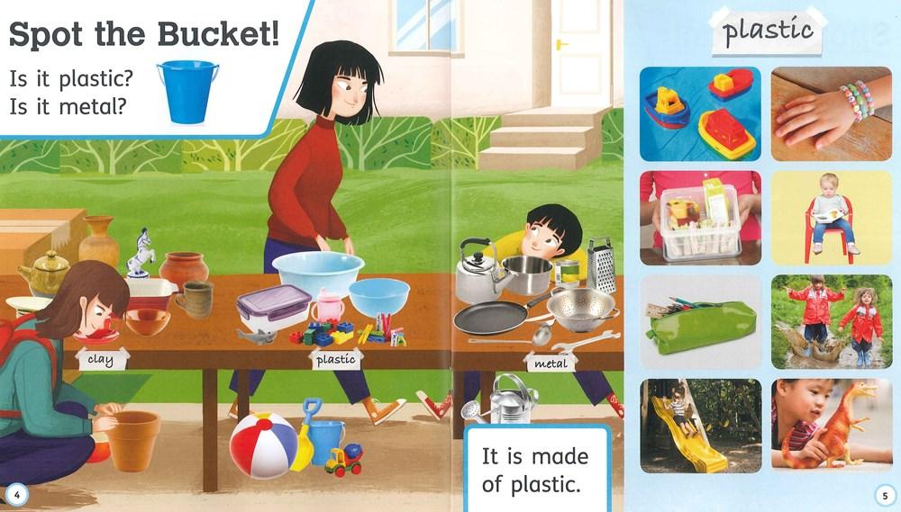

📘 Chapter 06: Materials Around Us – Questions and Answers
1. Choose the Correct Answer
Question 1. Which of the following materials is hard?
- Chalk
- Sponge
- Gold
- Cotton
Answer: (c) Gold.
Question 2. Which of the following properties does wood have?
- Hard
- Non-lustrous
- Insulator of heat
- All of these
Answer: (d) All of these.
Question 3. Which of the following is miscible with water?
- Vinegar
- Cooking oil
- Kerosene oil
- Petrol
Answer: (a) Vinegar. It mixes completely with water.
Question 4. Which of the following solids are insoluble in water?
- Chalk powder
- Sand
- Humus
- All of these
Answer: (d) All of these.
Question 5. Which of the following units is used to measure mass?
- L
- mL
- kg
- m
Answer: (c) kg (kilogram).
2. Write True or False. Also, Correct the Incorrect Statements.
Question 1. Materials that do not allow heat to flow through them are called conductors.
Answer: False. Materials that do not allow heat to pass through them easily are called insulators of heat.
Question 2. Light does not pass through opaque materials.
Answer: True.
Question 3. Liquids take the shape of the container in which they are stored.
Answer: True.
Question 4. Smooth surfaces are full of bumps and ridges.
Answer: False. Rough surfaces have bumps and ridges. Smooth surfaces have an even surface.
Question 5. Oil and water are miscible with one another.
Answer: False. Oil and water are immiscible. They do not mix with each other.
3. Match the Columns
| Column A | Column B | Correct Match |
|---|---|---|
| 1. Sugar | (d) Water soluble | 1 – (d) |
| 2. Plastic | (c) Insulator of electricity | 2 – (c) |
| 3. Nitrogen | (a) Gas | 3 – (a) |
| 4. Aluminium | (e) Good conductor of heat | 4 – (e) |
| 5. Frosted glass | (b) Translucent | 5 – (b) |
4. Give Two Properties of Each of the Following Materials
Question 1. Write two properties of iron.
Answer:
- Iron is hard and strong.
- It is a good conductor of heat and electricity.
Question 2. Write two properties of wood.
Answer:
- Wood is generally hard and non-lustrous.
- It is a poor conductor of heat and electricity.
Question 3. Write two properties of glass.
Answer:
- Glass is generally transparent.
- It is hard but brittle.
Question 4. Write two properties of plastic.
Answer:
- Plastic is generally light in weight.
- It is a poor conductor of heat and electricity.
Question 5. Write two properties of air.
Answer:
- Air is a mixture of gases.
- It has no fixed shape or volume.
5. Give One Word for the Following
Question 1. Materials that do not allow light to pass through them.
Answer: Opaque materials.
Question 2. Materials that allow light to pass through them completely.
Answer: Transparent materials.
Question 3. Materials that allow light to pass through them partially.
Answer: Translucent materials.
Question 4. Materials that allow electricity to pass through them.
Answer: Conductors of electricity.
Question 5. Materials that do not allow heat to pass through them easily.
Answer: Insulators of heat.
6. Give Two Examples of Each of the Following
Question 1. Smooth materials.
Answer:
- Glass
- Polished marble
Question 2. Non-lustrous materials.
Answer:
- Wood
- Chalk
Question 3. Transparent materials.
Answer:
- Clear glass
- Clean water
Question 4. Solids.
Answer:
- Stone
- Wood
Question 5. Hard materials.
Answer:
- Iron
- Gold
7. Define the Following Terms
Question 1. What is solubility?
Answer: Solubility is the ability of a substance to dissolve in a liquid. For example, sugar dissolves in water.
Question 2. What is density?
Answer: Density is the mass of a substance in a given volume. It tells us how closely the matter is packed in a substance.
Question 3. What is transparency?
Answer: Transparency is the property of a material that allows light to pass through it. For example, clear glass is transparent.
Question 4. What are miscible liquids?
Answer: Miscible liquids are liquids that mix completely with each other to form a uniform mixture. For example, water and vinegar.
Question 5. What is classification?
Answer: Classification is the process of grouping things according to their similar properties.
8. Answer the Following Questions Briefly
Question 1. Oxygen that we use for breathing is an example of which state of matter?
Answer: Oxygen is a gas. Therefore, it is an example of the gaseous state of matter.
Question 2. Name two substances that are soluble and two substances that are insoluble in water.
Answer:
Soluble substances:
- Sugar
- Salt
Insoluble substances:
- Sand
- Chalk powder
Question 3. How is wood different from glass?
Answer: Wood and glass have different properties.
| Wood | Glass |
|---|---|
| It is generally opaque. | It is generally transparent. |
| It is usually non-lustrous. | It can be lustrous. |
| It is a poor conductor of heat. | It is also a poor conductor of heat. |
| It is generally not brittle. | It is brittle and can break easily. |
Question 4. Why does cooking oil float on water?
Answer: Cooking oil floats on water because it is less dense than water. Oil and water do not mix with each other.
Question 5. What do you mean by conductors of heat? Give two examples.
Answer: Conductors of heat are materials that allow heat to pass through them easily.
Examples:
- Iron
- Aluminium
9. Answer the Following Questions in Detail
Question 1. Explain how materials can be classified on the basis of transparency.
Answer: Materials can be classified into three groups on the basis of how much light passes through them.
1. Transparent Materials
These materials allow light to pass through them completely. We can see objects clearly through them.
Examples: Clear glass and clean water.
2. Translucent Materials
These materials allow only some light to pass through them. We cannot see objects clearly through them.
Examples: Frosted glass and butter paper.
3. Opaque Materials
These materials do not allow light to pass through them. We cannot see through them.
Examples: Wood and stone.

Question 2. How will you classify materials on the basis of their appearance and texture?
Answer: Materials can be classified on the basis of their appearance and texture in the following ways.
A. On the Basis of Appearance
1. Lustrous Materials: Materials that have a shiny surface are called lustrous materials.
Examples: Gold and silver.
2. Non-lustrous Materials: Materials that do not have a shiny surface are called non-lustrous materials.
Examples: Wood and chalk.
B. On the Basis of Texture
1. Smooth Materials: Materials that have an even surface are called smooth materials.
Examples: Glass and polished marble.
2. Rough Materials: Materials that have an uneven surface with bumps and ridges are called rough materials.
Examples: Sandpaper and tree bark.

Question 3. Differentiate between the three states of matter. Also give two examples of each type.
Answer: Matter is commonly found in three states: solid, liquid and gas.
| Property | Solids | Liquids | Gases |
|---|---|---|---|
| Shape | Have a fixed shape. | Take the shape of the container. | Have no fixed shape. |
| Volume | Have a fixed volume. | Have a fixed volume. | Have no fixed volume. |
| Flow | Do not flow. | Can flow. | Can flow easily. |
| Arrangement of particles | Particles are closely packed. | Particles are less closely packed. | Particles are far apart. |
Examples:
- Solids: Stone and wood.
- Liquids: Water and cooking oil.
- Gases: Oxygen and nitrogen.

Question 4. Give the classification of materials on the basis of solubility.
Answer: Materials can be classified into two groups on the basis of their solubility in water.
1. Soluble Materials
Materials that dissolve in water are called soluble materials.
Examples: Sugar and salt.
2. Insoluble Materials
Materials that do not dissolve in water are called insoluble materials.
Examples: Sand and chalk powder.
Conclusion: Some materials dissolve in water, while others do not. This property is called solubility.

Question 5. State the general properties of metals and plastics.
Answer:
A. General Properties of Metals
- Metals are generally hard and strong.
- They are usually lustrous or shiny.
- They are generally good conductors of heat.
- They are generally good conductors of electricity.
- Most metals are solids at room temperature.
- Many metals can be beaten into thin sheets and drawn into wires.
Examples: Iron, copper, aluminium and gold.
B. General Properties of Plastics
- Plastics are generally light in weight.
- They can be moulded into different shapes.
- Most plastics are poor conductors of heat.
- Most plastics are poor conductors of electricity.
- They do not rust like iron.
- They are available in many colours and forms.
Examples: Plastic bottles, buckets, toys and pipes.
| Metals | Plastics |
|---|---|
| Generally hard and strong. | Many are light and flexible. |
| Usually shiny. | May be shiny or dull. |
| Generally conduct heat and electricity. | Generally insulate against heat and electricity. |
| Many can be beaten into sheets. | Can be moulded into different shapes. |

10. Quick Revision – Important Points
- Materials are the substances from which objects are made.
- Materials can be classified according to their properties.
- Gold and iron are examples of metals.
- Wood and plastic are generally poor conductors of heat.
- Transparent materials allow light to pass through completely.
- Translucent materials allow light to pass through partially.
- Opaque materials do not allow light to pass through.
- Lustrous materials have shiny surfaces.
- Rough surfaces have bumps and ridges.
- Soluble substances dissolve in water.
- Insoluble substances do not dissolve in water.
- Oil and water are immiscible liquids.
- Solids have a fixed shape and volume.
- Liquids have a fixed volume but no fixed shape.
- Gases have neither a fixed shape nor a fixed volume.
- Kilogram (kg) is a unit of mass.
- Metals are generally good conductors of heat and electricity.
- Plastics are generally poor conductors of heat and electricity.
11. Chapter Summary
Materials are the substances from which different objects are made. Materials have different properties such as hardness, appearance, texture, transparency, solubility and conductivity. On the basis of transparency, materials are classified as transparent, translucent and opaque. On the basis of appearance, they may be lustrous or non-lustrous. Materials can also be classified as smooth or rough. Matter exists mainly in three states: solid, liquid and gas. Some substances dissolve in water, while others do not. Metals are generally good conductors of heat and electricity, whereas plastics are generally poor conductors.
Message of the Chapter
Different materials have different properties. We should understand these properties to choose the right material for making different objects.
MCQ Quiz
अध्याय के वस्तुनिष्ठ प्रश्नों का अभ्यास करें।
MCQ Quiz शुरू करेंPDF Notes
इस अध्याय के नोट्स PDF में पढ़ें या डाउनलोड करें।
📄 View PDF ⬇️ Download PDF